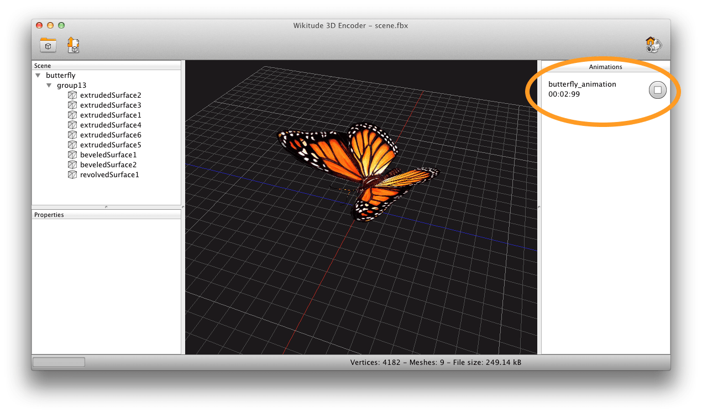

3D Assets Workflow
Prerequisites
- A 3D model in FBX (.fbx) file format (FBX up to version 2015)
- Wikitude 3D Encoder for Windows or MacOS X
3D content within the Wikitude SDK can only be loaded from so-called Wikitude 3D Format files (.wt3). This is a compressed binary format for describing 3D content, which is optimized for fast loading and handling of 3D content on mobile devices. You still can use 3D models from your favorite 3D modeling tools (like Autodesk® Maya® or Blender), but need to convert them into wt3 file format using the Wikitude 3D Encoder (encoder for short). The Encoder loads Autodesk® FBX® files (.fbx) and exports them to .wt3 files.
This section should give an overview on how to choose the right 3D models for displaying it in Wikitude's augmented reality SDK. As Wikitude is basing 3D support on a converted file format (.wt3) it is good to follow the best practices below.
Input format
Supported 3D model files for encoding wt3 files are:
- FBX (.fbx) - max version: FBX 2015
Features you can use in your 3D model source files:
- Mesh types
- Triangle-based meshes: The 3D models usually consist on a hierarchy of scenes nodes where the leaf nodes contain parts of a 3D mesh.
- Skin-based meshes: mesh vertices a placed relative to a list of joint nodes, so-called bones.
- Animations
- Key-frame-based transformations/rotations/scalings applied to mesh vertices or scene nodes.
- Bone animations for skin-based models.
- Textures
- All textures are converted to the PNG file format during the import. The converter accepts textures of the usual picture file formats, like JPEG, GIF, TIFF, ...
- Lights
- Diffuse (Lambert) lighting by specifying a directional light source.
- Specular (Phong) lighting by specifying specular light source (direction and specular exponent). Several light sources can be used within a scene. However, only one light source (including diffuse+specular light) can be used for each mesh part, i.e., scene node. Thereby the light source which is closest to the scene node within the scene hierarchy (by traversing the tree upwards) is used. That is, a light source specified as a root node will be applied to all mesh parts in a scene. Other light sources will be applied to all mesh parts which are lower in the scene hierarchy.
- NURBS (will be tessellated on import)
- Transparency
- Semi-transparent surfaces, like windows of a car, can visualized. , but only one semi-transparent layer can be visualized accordingly. The result of rendering several semi-transparent layers upon each other is
- Model size: There is no limit on the size of the 3D models in terms of numbers of mesh vertices or textures. However, for rendering the 3D models fluently on mobile devices we recommend to keep the total file size below 5-10 MB and the number of mesh vertices below 100k.
Features that are not (yet) supported
- bump maps/normal maps (normals are only evaluated on mesh vertices)
- multi-textured surfaces (more than one texture on the same mesh)
- multiple transparent layers (transparent layers are not depth queued)
- animated textures on 3D models
- height maps
Good practice
Use png textures
Textures are stored in png format within wt3 files. While Wikitude 3D Encoder takes care of automatically converting textures to png, it is good practice to use png textures in the source 3D Model file.
Use power of 2 textures
The rendering hardware on mobile devices often requires expects textures to have dimensions which are a power of 2 textures (e.g. 64x64, 128x128, ...). Other texture dimensions can lead to unexpected results. Additionally, using power-of-2 textures yields a better rendering performance.
Validate texture paths
Textures can be stored within the FBX file or referenced by a file path. In the latter case, make sure to not use absolute paths since these often are not valid on other machines. Instead use relative paths. Texture files are also searched in the directory which contains the FBX file. We therefore recommend to provide external textures files in the same directory as the 3D model, i.e. the FBX file, itself.
Keep texture sizes as low as possible
Keeping texture sizes as low as possible, while maintaining the required details has several benefits. The exported .wt3 file will be smaller and therefore quicker to load. And your application will require less memory.
Use only one light
To maintain a good rendering performance each part of your model (node) is only affected by a single light source. You may use multiple lights in the source file but at render time only a single node is selected to affect a mesh part. We make a best guess, utilizing the scene graph to assign a light to the node. If lighting is not required simply remove the lights from your source 3D model file and/or set the corresponding material properties. This helps to speed up rendering.
Resolving problems
Different 3D modeling tools encode the 3D models differently during the FBX export which may lead to different rendering results when viewing the 3D models with other applications. We therefore recommend to verify your 3D model with the free Autodesk "FBX Reviewer".
3D Model which uses joints (bones) is distorted
Create a root joint node such that all other joint nodes share the same root node.
3D Model shows up correctly in Wikitude 3D Encoder but does not show on the device.
Check the file size of your wt3 file. Limiting the textures to the lowest size that maintains the required details. Keep the number of mesh vertices reasonable such that your targeted mobile device can cope with it.
Textures are missing
Check the error/warning dialog during the import process of the model it will give you detailed information on which textures are problematic. Make sure the texture paths are valid and accessible.
Working with 3D Animations
Quick start
Export a model that contains one or more animations to a FBX file. After you load the 3D model into the Wikitude 3D Encoder the animations are displayed in a list on the right-hand side of your application window.

Each row of the list contains the ID of the animation, a control button and the time that passed after you started the animation. Clicking the play button will start the animation from the beginning and play back the animation in the 3D view of the application. The stop button will stop animation and displays the frame, that was drawn last.
Check if your model looks and animates as expected and export it to a wt3 file. You need the IDs of the animations you want to use in your application. The IDs are displayed next to the animation control button (on the screenshot the animation ID is butterfly_animation). In your code you start an animation like this.
// instantiate the model object
var model = new AR.Model("butterfly.wt3");
// instantiate the model animation with the animation id
var animation = new AR.ModelAnimation(model, "butterfly_animation");
// start the animation
animation.start();
Export Animations
The Wikitude 3D Encoder supports animation of joints and transformation animations. This includes transformation animations along motion paths.
When exporting the model from the 3D modeling tool you have to bake your animations. For example, Maya bakes all unsupported constraints, including Maya-supported and FBX constraints, into animation curves.
Grouping Animations
Animations will be grouped automatically to a top level node. In order to create two separate animations you need to group them in your modeling tool accordingly.
To illustrate that let's create an example with 3 spheres and 3 cylinders with different translation animations. In the scene graph this example looks like the following:
• sphere1
• sphere2
• sphere3
• cylinder1
• cylinder2
• cylinder3
Once the example is exported to FBX and imported into the Wikitude 3D Encoder six separate animations, one for each object, will be generated.
Let's assume we want to group all sphere animations into one animation and all cylinders into a second animation. This can be achieved by creating two separate groups. One group containing all spheres and another one containing all cylinders. In the scene graph this is going to look like this:
• all_spheres_group
• sphere1
• sphere2
• sphere3
• all_cylinders_group
• cylinder1
• cylinder2
• cylinder3
Export this to FBX and import it into the Wikitude 3D Encoder we would get the desired result: one animation that animates all spheres and another animation animating all cylinders.
Note: Do not group joints, especially when they were already skinned to a mesh.
Known Issues
- In Blender avoid transformations on bones before you skin them to a mesh and export it to an FBX file.
- Exporting a 3D model with animations from Blender to FBX creates additional animations for camera, lights or motion paths. These can be safely ignored.